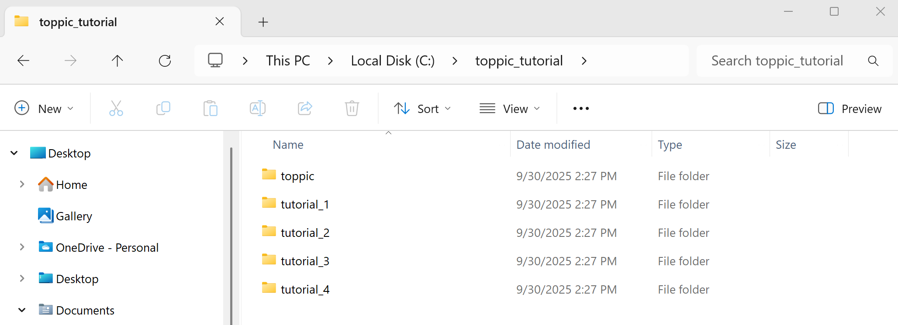
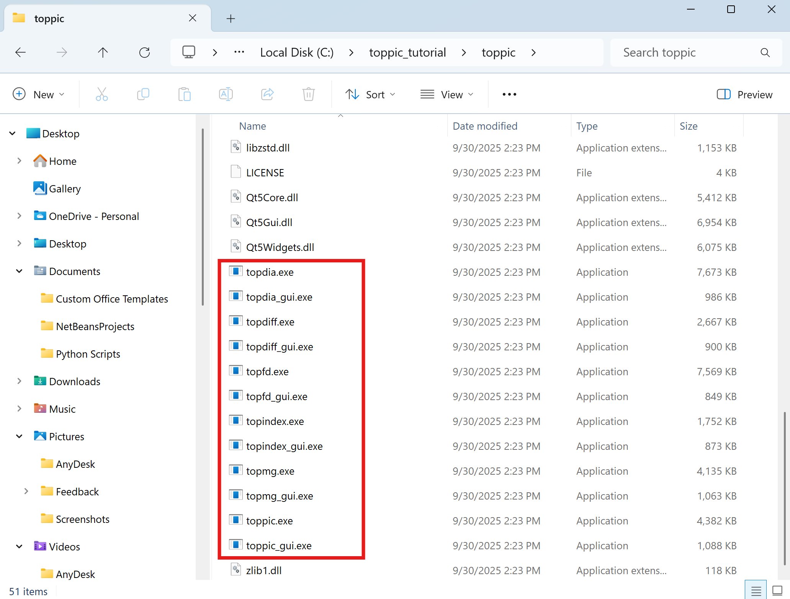
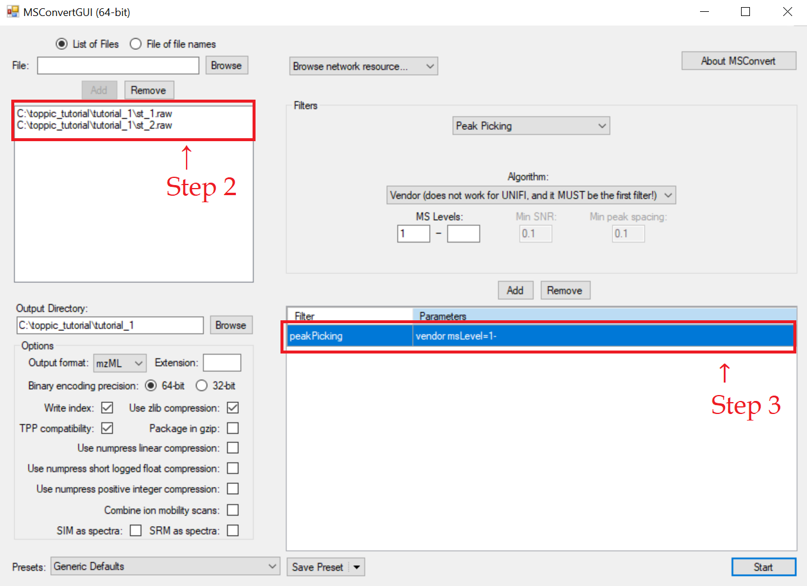
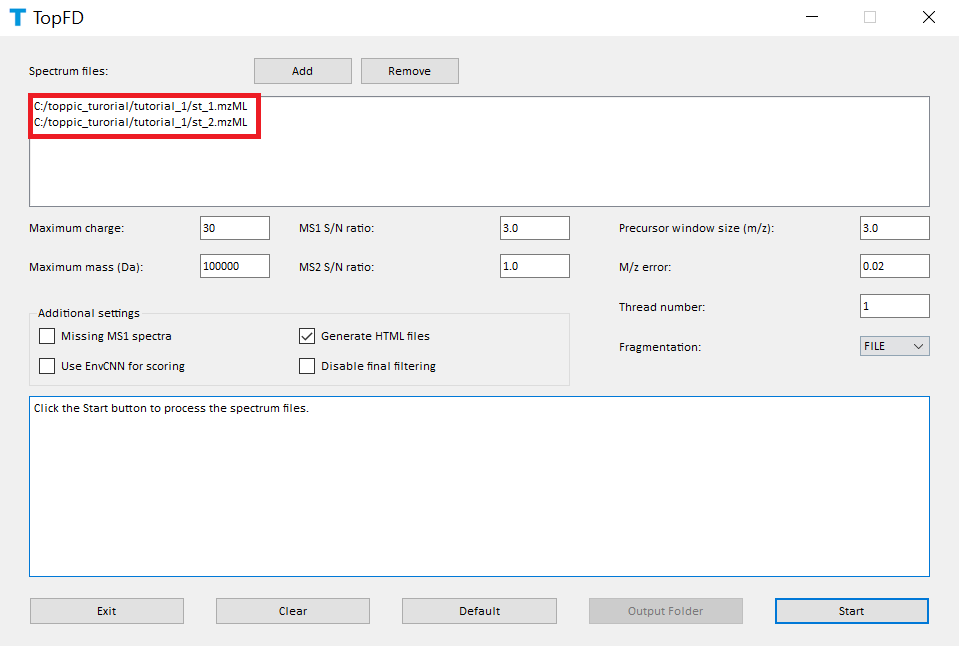
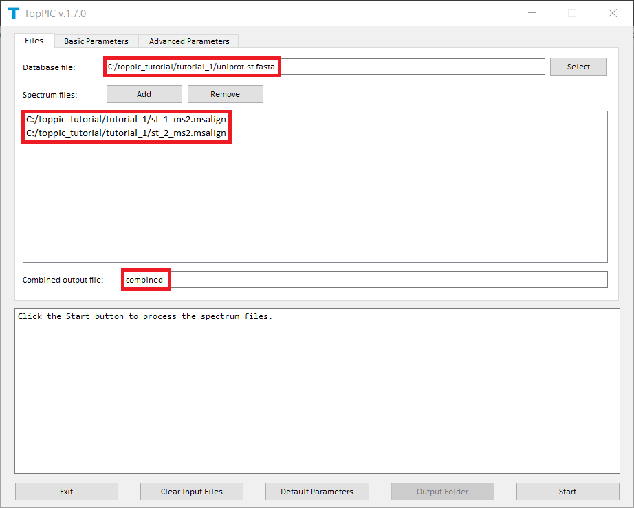
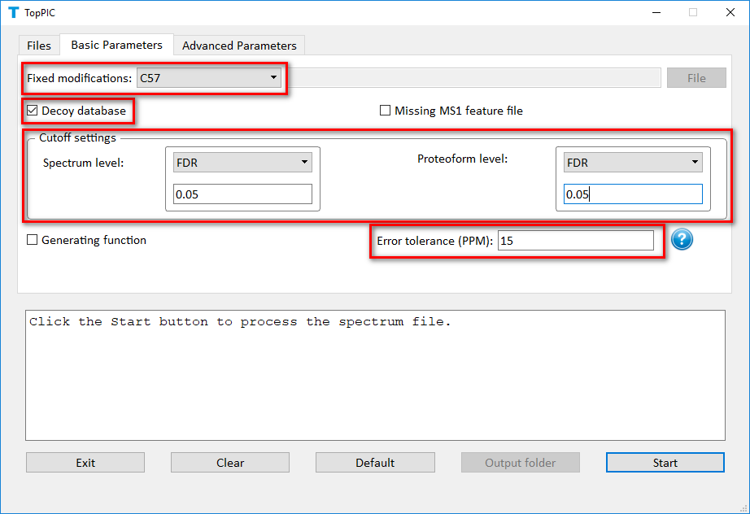
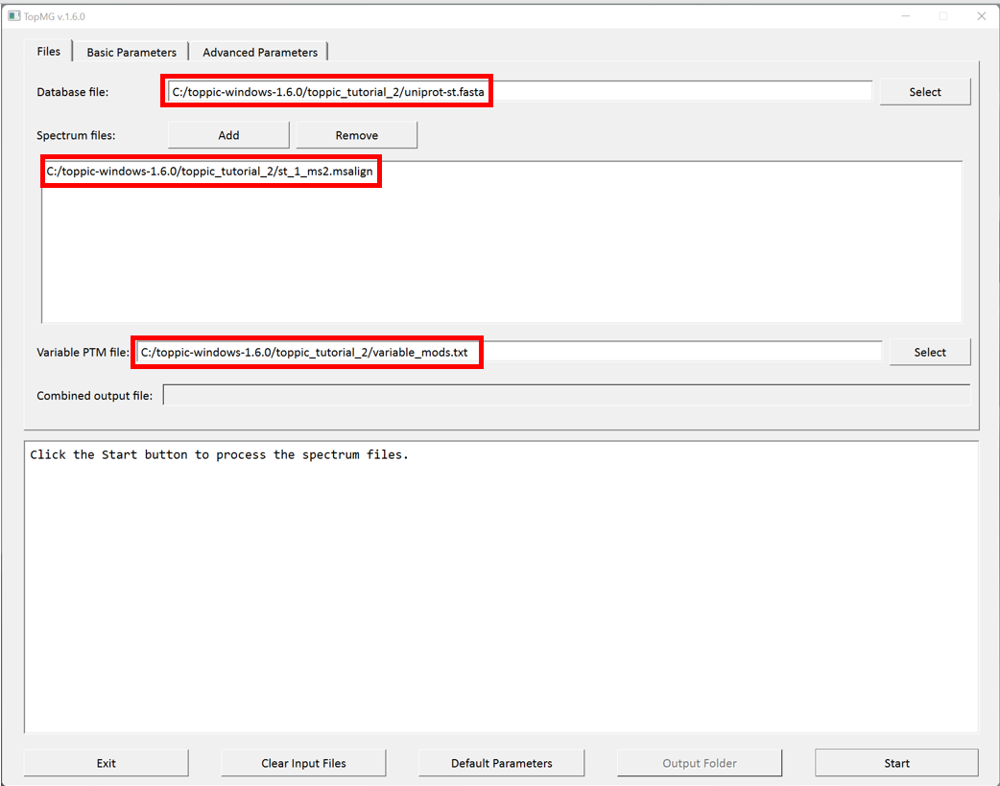
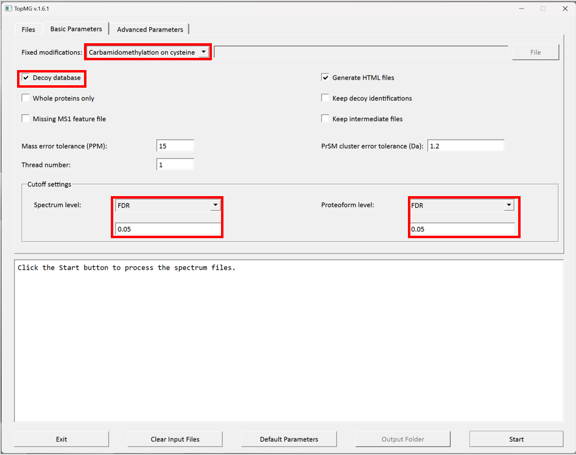

Create the folders below for software packages and data sets used in this tutorial.
toppic_tutorial on the C: drive of your system.
toppic in the folder C:\toppic_tutorial\ for
the software TopPIC suite.
tutorial_1 in the folder C:\toppic_tutorial\.
tutorial_2 in the folder C:\toppic_tutorial\.
The resulting folder structure is shown in the screenshot below.

Msconvert is a software tool in ProteoWizard that converts raw files into various spectrum file formats.
Follow the steps below to download ProteoWizard:
C:\toppic_tutorial\toppic\.C:\toppic_tutorial\toppic\.
In the MS experiment, the protein extract of S. typhimurium was reduced with dithiothreitol and alkylated with iodoacetamide. The protein mixture was first separated by gas-phase fractionation, resulting in 7 fractions. Each fraction was separated by an HPLC system coupled to an LTQ-Orbitrap mass spectrometer (Thermo Fisher Scientific). MS and MS/MS spectra were collected at a resolution of 60,000 and 30,000, respectively. In this tutorial, we use only the data files of two fractions (st_1.raw and st_2.raw).
Click here
to download the data set, save it in the folder C:\toppic_tutorial\tutorial_1\, and unzip it in the same folder.
A S. typhimurium proteome database of 1,795 proteins was downloaded from the UniProt database.
Click here
to download the protein database and save it in the folder
C:\toppic_tutorial\tutorial_1\.
The folder C:\toppic_tutorial\tutorial_1\ is shown in the screenshot below.
We use MSConvertGUI to convert the raw files st_1.raw and st_2.raw to mzML files.
c:\toppic_tutorial\tutorial_1\st_1.raw and c:\toppic_tutorial\tutorial_1\st_2.raw as input files.The screenshot of MSConvertGUI is shown below.

In the above file format conversion, the peak picking filter (step 3) is used to generate centroid, not profile, mzML data files, which are required by the spectral deconvolution tool TopFD.
The resulting mzML files are
C:\toppic_tutorial\tutorial_1\st_1.mzMLand
C:\toppic_tutorial\tutorial_1\st_2.mzMLThe sizes of the two files are about 41 MB and 47 MB, respectively. They can be downloaded here. The running time for the file format conversion is less than one minute.
We use topfd_gui for top-down mass spectral deconvolution.
topfd_gui.exe in the folder
C:\toppic_tutorial\toppic.c:\toppic_tutorial\tutorial_1\st_1.mzML
and c:\toppic_tutorial\tutorial_1\st_2.mzML as input files.
The screenshot of topfd_gui is shown below.

TopFD reports eight text files.C:\toppic_tutorial\tutorial_1\st_1_ms2.msalign
C:\toppic_tutorial\tutorial_1\st_2_ms2.msalign
C:\toppic_tutorial\tutorial_1\st_1_ms1.feature
C:\toppic_tutorial\tutorial_1\st_1_ms2.feature
C:\toppic_tutorial\tutorial_1\st_2_ms1.feature
C:\toppic_tutorial\tutorial_1\st_2_ms2.feature
C:\toppic_tutorial\tutorial_1\st_1_feature.xml
C:\toppic_tutorial\tutorial_1\st_2_feature.xml
The eight output files can be downloaded here.
We use toppic_gui to search the MS/MS spectra in
st_1_ms2.msalign and st_2_ms2.msalign
against the protein database uniprot-st.fasta to
identify PrSMs.
toppic_gui.exe in the folder
C:\toppic_tutorial\toppic.C:\toppic_tutorial\tutorial_1\uniprot-st.fasta as the protein
database file.C:\toppic_tutorial\tutorial_1\st_1_ms2.msalign
and C:\toppic_tutorial\tutorial_1\st_2_ms2.msalign as
mass spectrum data files. C57 as the fixed modification. Decoy database. FDR as the spectrum level cutoff type. FDR as the proteoform level cutoff type.
The screenshots of toppic_gui are shown below.


For each input msalign file, TopPIC reports two csv files, an xml file, and a collection of html files for identified proteoforms. For example, the output files for st_1_ms2.msalign are
C:\toppic_tutorial\tutorial_1\st_1_ms2_toppic_prsm.csv
C:\toppic_tutorial\tutorial_1\st_1_ms2_toppic_proteoform.csv
C:\toppic_tutorial\tutorial_1\st_1_ms2_toppic_proteoform.xml
C:\toppic_tutorial\tutorial_1\st_1_html\toppic_prsm_cutoff_html
C:\toppic_tutorial\tutorial_1\st_1_html\toppic_proteoform_cutoff_html
In addition, the identifications reported for st_1_ms2.msalign and st_2_ms2.msalign are combined, and filtered by a 1% spectrum-level FDR and a 1% proteoform level FDR. The combined results are reported in the following files.
C:\toppic_tutorial\tutorial_1\combined_ms2_toppic_prsm.csv
C:\toppic_tutorial\tutorial_1\combined_ms2_toppic_proteoform.csv
C:\toppic_tutorial\tutorial_1\combined_ms2_toppic_proteoform.xml
C:\toppic_tutorial\tutorial_1\combined_ms2_toppic_prsm_cutoff_html
C:\toppic_tutorial\tutorial_1\combined_ms2_toppic_proteoform_cutoff_html
In the analysis, C57 is selected as the fixed modification because proteins were reduced with dithiothreitol and alkylated with iodoacetamide before the MS experiment. When proteins are not reduced, C0 should be selected.
A shuffled decoy database is concatenated
to the target database to estimate spectrum level and proteoform level
FDRs. All identified PrSMs are first filtered by a
1% spectrum level FDR and the resulting PrSMs are reported in the
file combined_ms2_toppic_prsm.csv. The proteoforms corresponding to the PrSMs
are further filtered using a 1% proteoform level FDR and
the resulting proteoforms and their corresponding best PrSMs are reported in the file
combined_ms2_toppic_proteoform.csv. Microsoft Excel can be used to open these two files.
To browse the annotations in the two folders combined_prsm_cutoff_html and
combined_proteoform_cutoff_html, use a web browser (Google Chrome is
recommended) to open the file proteins.html.
The output files can be downloaded here.
We use topfd for top-down mass spectral deconvolution.
C:\toppic_tutorial\toppic\topfd.exe
C:\toppic_tutorial\tutorial_1\st_1.mzML
C:\toppic_tutorial\tutorial_1\st_2.mzML
cd c:\toppic_tutorial\tutorial_1
..\toppic\topfd st_*.mzML
We use toppic to search the MS/MS spectra in st_1_ms2.msalign
and st_2_ms2.msalign
against the protein database uniprot-st.fasta to identify PrSMs.
C:\toppic_tutorial\toppic\toppic.exe
C:\toppic_tutorial\tutorial_1\unprot-st.fasta
C:\toppic_tutorial\tutorial_1\st_1_ms2.msalign
C:\toppic_tutorial\tutorial_1\st_2_ms2.msalign
C:\toppic_tutorial\tutorial_1\st_1_ms1.feature
C:\toppic_tutorial\tutorial_1\st_1_ms2.feature
C:\toppic_tutorial\tutorial_1\st_2_ms1.feature
C:\toppic_tutorial\tutorial_1\st_2_ms2.feature
cd c:\toppic_tutorial\tutorial_1
..\toppic\toppic -f C57 -d -t FDR -T FDR -c combined uniprot-st.fasta st_*_ms2.msalign
We will use TopMG to analyze the data set st_1.raw described in Tutorial 1. TopMG is still in the development stage. Please let us know if you find any bugs in it..
C:\toppic_tutorial\tutorial_2\, and
unzip it. It includes the following files.
C:\toppic_tutorial\tutorial_2\uniprot-st.fasta
C:\toppic_tutorial\tutorial_2\st_1_ms2.msalign
C:\toppic_tutorial\tutorial_2\st_1_ms2.feature
C:\toppic_tutorial\tutorial_2\variable_ptms.txt
topmg_gui.exe in the folder
C:\toppic_tutorial\toppic.C:\toppic_tutorial\tutorial_2\uniprot-st.fasta as the protein
database file.C:\toppic_tutorial\tutorial_2\st_1_ms2.msalign as a
mass spectrum data file. C:\toppic_tutorial\tutorial_2\variable_mods.txt as the file of variable PTMs. C57 as the fixed modification. Decoy database. FDR as the spectrum level cutoff type. FDR as the proteoform level cutoff type.
The screenshots of topmg_gui are shown below.


TopMG reports two cvs files, and a collection of html files for identified proteoforms.
C:\toppic_tutorial\tutorial_2\st_1_ms2_topmg_prsm.csv
C:\toppic_tutorial\tutorial_2\st_1_ms2_topmg_proteoform.csv
C:\toppic_tutorial\tutorial_2\st_1_html\topmg_prsm_cutoff_html
C:\toppic_tutorial\tutorial_2\st_1_html\topmg_proteoform_cutoff_html
The output files can be downloaded here.
C:\toppic_tutorial\toppic\topmg.exe
C:\toppic_tutorial\tutorial_2\unprot-st.fasta
C:\toppic_tutorial\tutorial_2\st_1_ms2.msalign
C:\toppic_tutorial\tutorial_2\st_1_ms2.feature
C:\toppic_tutorial\tutorial_2\variable_mods.txt
cd c:\toppic_tutorial\tutorial_2
..\toppic\topmg -f C57 -d -t FDR -v 0.05 -T FDR -V 0.05 -i variable_mods.txt uniprot-st.fasta st_1_ms2.msalign